Here are the best known solutions:
| n=1 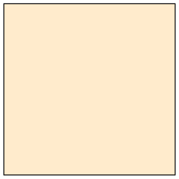 s = 1 | n=2 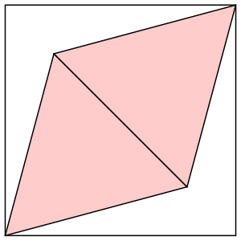 s = 3√6/4 = 1.837+ | n=3, 4 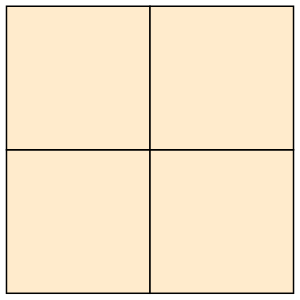 s = 2 | n=5 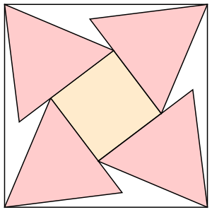 s = 2.568+ |
| n=6 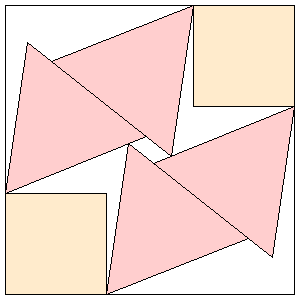 s = (19+27√3–3√15)/19 = 2.84981+ (YG) | n=7, 8, 9 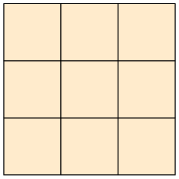 s = 3 | n=10 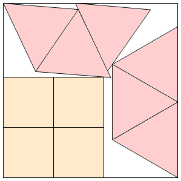 s = 3.469+ (MM) | n=11 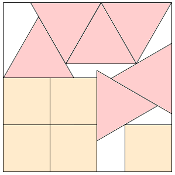 s = (43–2√3)/11 = 3.594+ (MM) |
| n=12 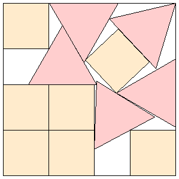 s = 3.78371+ (YG) | n=13 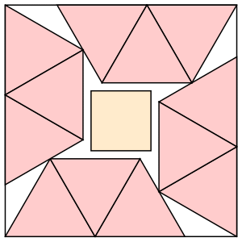 s = (6+√3)/2 = 3.866+ | n=14, 15, 16 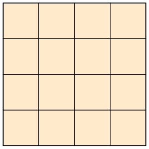 s = 4 | n=17 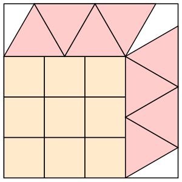 s = 3+3√3/4 = 4.299+ |
| n=18 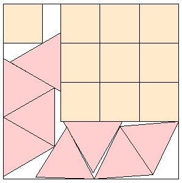 s = 4.46279+ (YG) | n=19 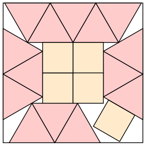 s = 2+3√3/2 = 4.598+ | n=20 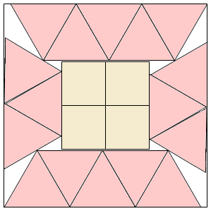 s = 4.644+ (MM) | n=21 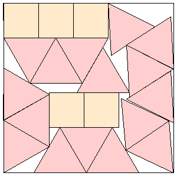 s = 4.86344+ (YG) |
| n=22 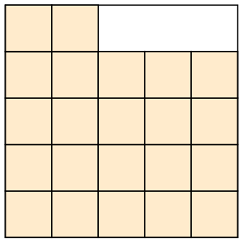 s = 4.97429+ (YG) | n=23, 24, 25 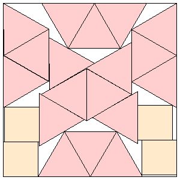 s = 5 | n=26 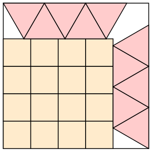 s = 4+3√3/4 = 5.299+ | n=27 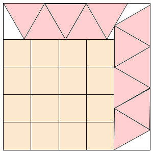 s = 5.311+ (MM) |
| n=28 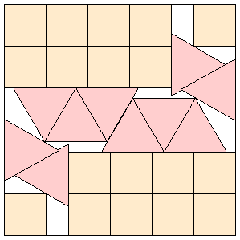 s = (125+11√3)/26 = 5.54048+ (YG) | n=29 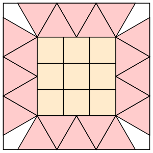 s = 3+3√3/2 = 5.598+ | n=30 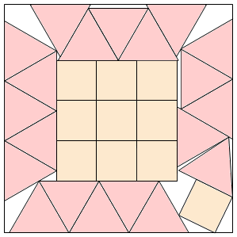 s = 5.692+ (MM) | n=31 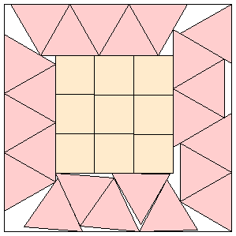 s = 5.78759+ (YG) |
| n=32 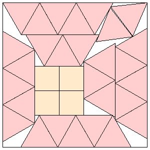 s = 5.89713+ (YG) | n=33 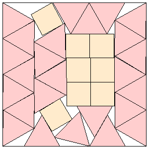 s = 5.97777+ (YG) | n=34, 35, 36 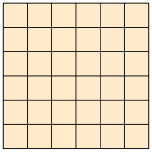 s = 6 | n=37 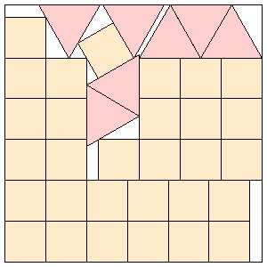 s = 6.29903+ (YG) |
| n=38 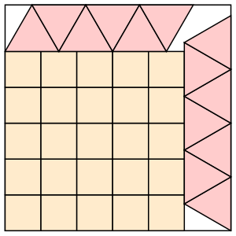 s = 5+3√3/4 = 6.299+ | n=39 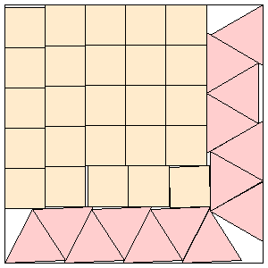 s = 6.40570+ (YG) | n=40 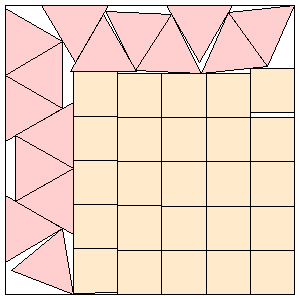 s = 6.53309+ (YG) | n=41 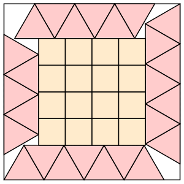 s = 4+3√3/2 = 6.598+ |
| n=42 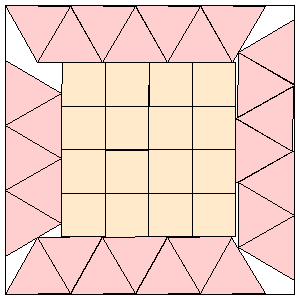 s = 6.64608+ (YG) | n=43 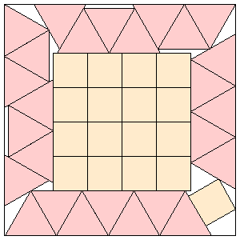 s = (60–23√3)/3 = 6.72094+ (YG) | n=44 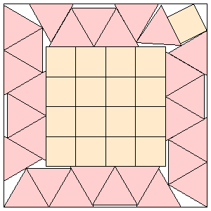 s = 6.79477+ (YG) | n=45 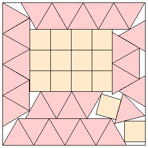 s = (12+9√3)/4 = 6.89711+ (YG) |
| n=46 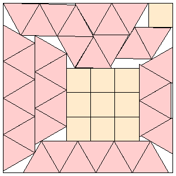 s = 6.97980+ (YG) | n=47, 48, 49 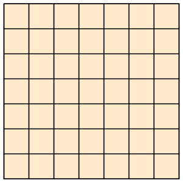 s = 7 | n=50 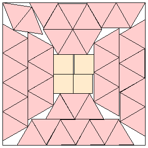 s = 7.29390+ (YG) |
If you can extend any of these results, please e-mail me. Click here to go back to Math Magic. Last updated 4/12/20.